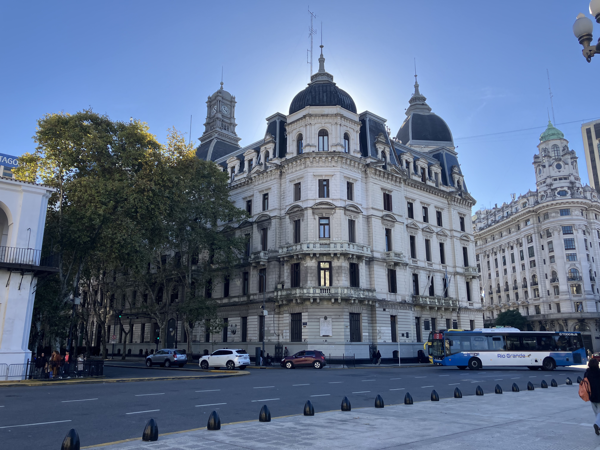
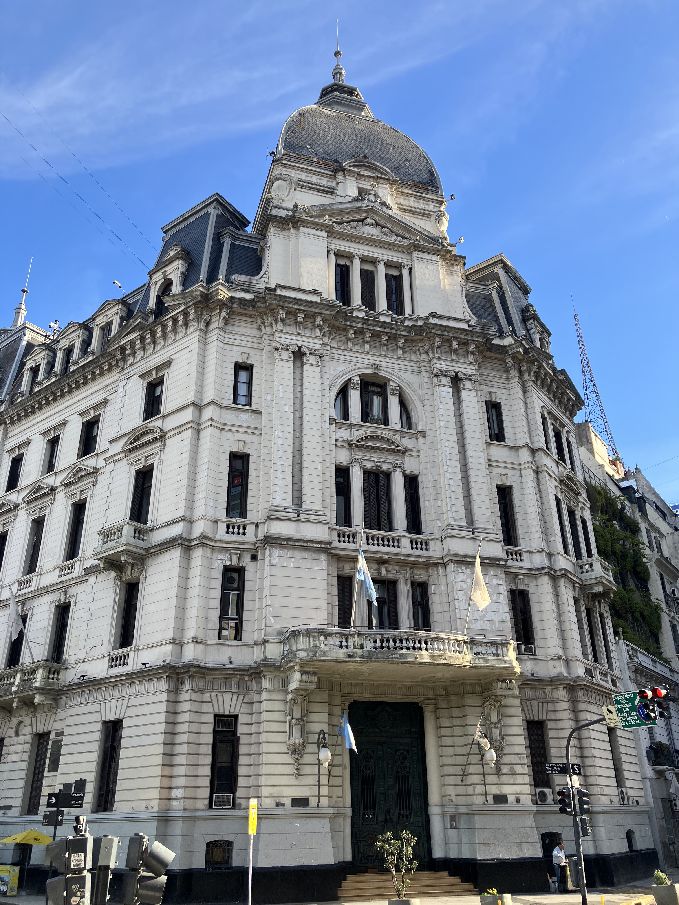
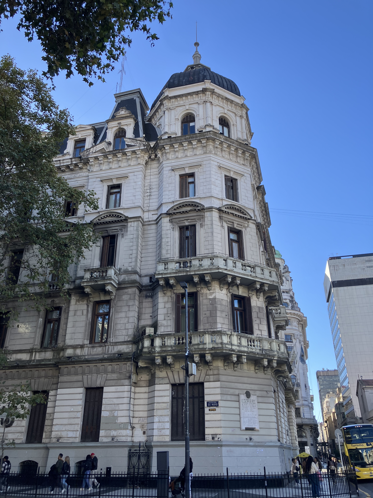
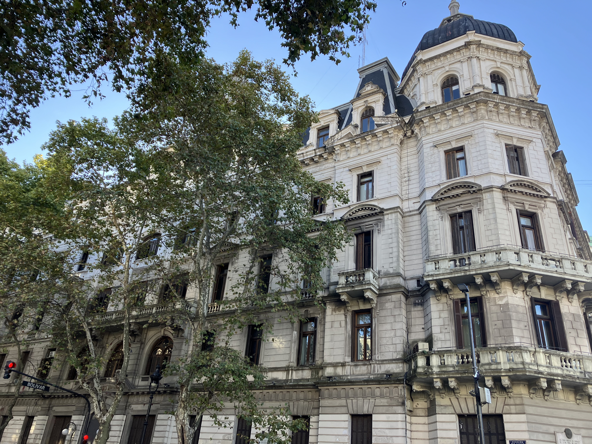
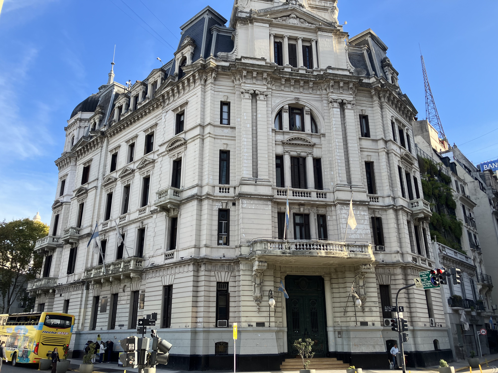
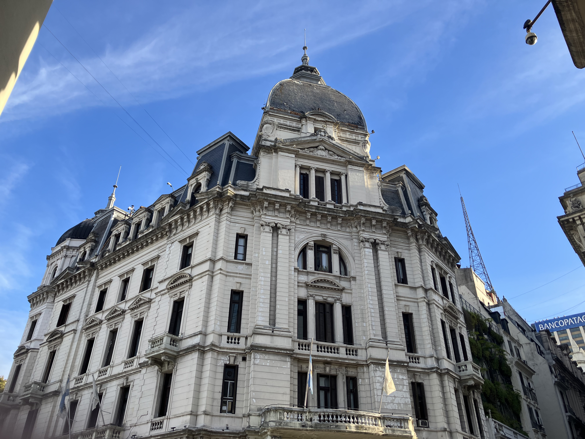
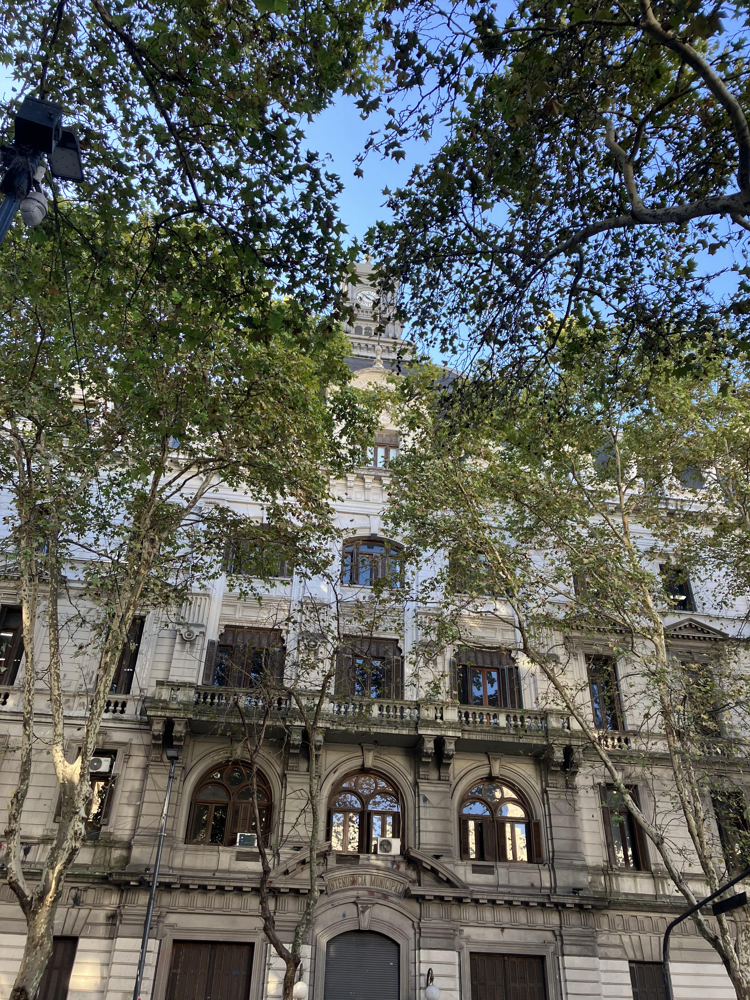
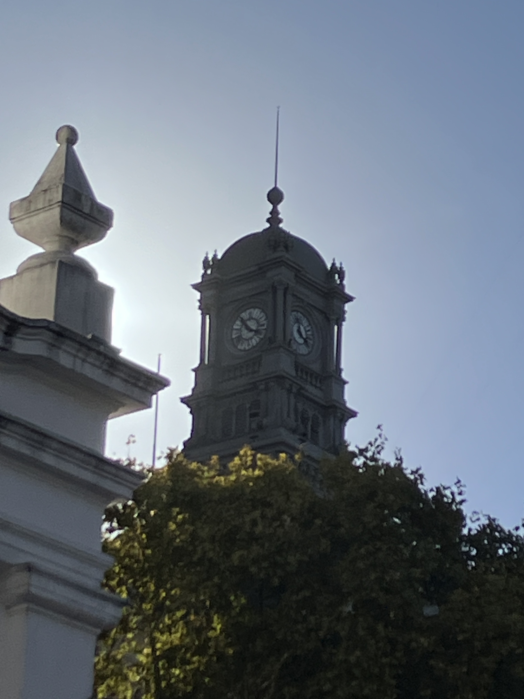

Palacio de Gobierno de la Ciudad

Architect: Juan Antonio Buschiazzo
Location: Av. de Mayo 540, Buenos Aires
Completed: 1891
Style: Italianate / Eclecticism
History
Originally conceived as a municipal administrative building, the palace became the seat of Buenos Aires’ local government during a formative period in the city’s expansion. Completed in 1891, it witnessed the transformation of Buenos Aires into a modern metropolis. Over time, it housed key institutions and played a central role in the organization and governance of the capital.
Architecture
The building reflects Italianate influences combined with eclectic elements typical of late 19th-century Buenos Aires. Its symmetrical façade, arched windows, and ornamental details convey a sense of order and authority. The structure integrates classical proportions with decorative refinement, embodying the architectural language of a city looking toward Europe for inspiration.
Legacy
As one of the earliest purpose-built government buildings in Buenos Aires, it represents the consolidation of municipal power and civic identity. Its location on Avenida de Mayo places it within a historically significant urban axis, preserving its role as a symbol of the city’s administrative heritage and institutional continuity.
Gallery






